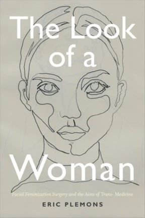
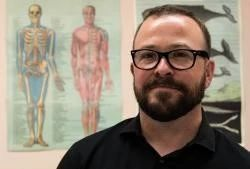
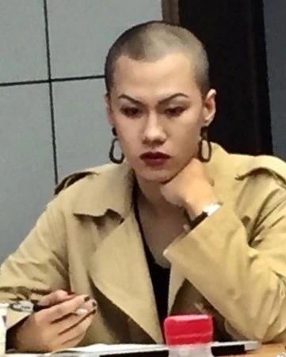
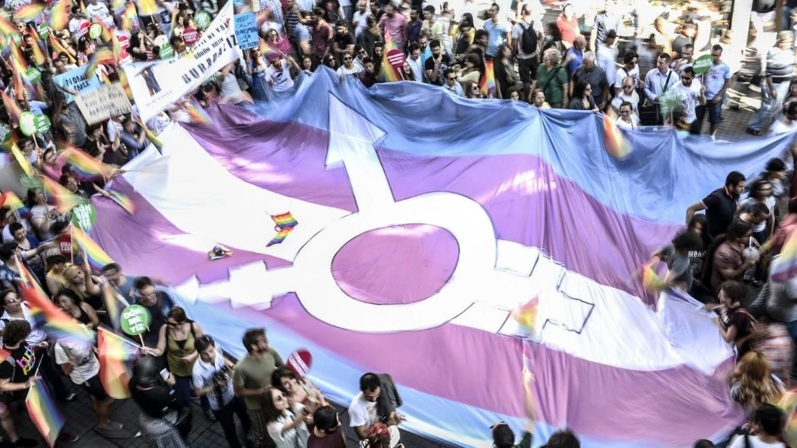

The Look of a Woman：Facial Feminization Surgery and the Aims of Trans- Medicine
由于近年来跨性别组织的努力，像SRS（性别重置手术）和HRT（荷尔蒙替代疗法）这样的术语已经逐渐进入公众的认知视野，不过另外一种与跨性别医疗需求同样密切相关的手术却并未得到广泛了解，即FFS（面部女性化手术）——而这本书则为我们提供了一个了解美国当代FFS医疗实践的窗口。作为一套在20世纪80年代由美国医生Douglas Ousterhout创始的手术流程，作者Eric Plemons认为，它不仅折射出医学界和公众对性别的认知逐渐跳出狭隘的生殖器中心观，更加认可性别也是在社会交往过程中的所产生的对身份的预期、感知和承认，这本书对FFS从面诊到术后评估全过程的细致描写，还让我们有机会进入病房和手术室，探讨面部特征是否真的存在所谓科学的“性别差异”，以及现代医学是如何在理解、测量这种差异的基础上，通过手术的方式来试图为跨性别女性塑造“女性的面容”的。除了关涉到性别理论的范式变迁以外，FFS手术的流行也折射出近年来美国跨性别运动家要求将FFS正式纳入医保报销范围的一系列倡导行动，同时也与美国医疗服务的市场化、整形美容手术产业的蓬勃发展密不可分。作者提醒我们，当我们在医疗服务日益新自由主义化的背景下谈跨性别权益时，不能忽略的是处于经济弱势的跨性别群体再一次被排除在医疗服务的供给之外的事实。同样身为一名跨性别（尽管作者是一位跨性别男性），作者Eric Plemons非常重视跨性别女性在寻求和实践FFS过程中的主体感受和经验，也在写作过程中时时反思自己当前白人男性身份的特权。虽然他自身并非是一位进行过FFS的跨性别女性，但他的反思习惯让阅读这本书成为了一种愉快的体验，也促使这本书的读者，无论是跨性别还是顺性别，思考自身在打造性别主体中的种种遭遇。
作者Eric Plemons在加州大学伯克利分校取得人类学博士，目前在亚利桑那大学人类学系任教。他也是该校跨性别研究小组的联合负责人。他长期关注美国的跨性别医疗服务供给、手术能力、满意度调查等议题。2020年3月31日 周二 19:00-21:00
曾经是个平平无奇的光头美女，现在是一头乱发的肥胖娘p。国际跨性别现身日（International Transgender Day of Visibility）在每年3月31日，是专门为庆祝跨性别者的身份、并提高公众对跨性别所受歧视的意识的节日。